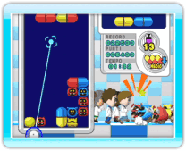
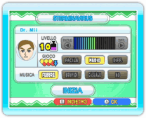

16 |
Giocare a Sterminavirus |
 |
 
A Sterminavirus possono giocare fino a quattro giocatori. Le regole di gioco sono le stesse del gioco Classico di Dr. Mario, ma si gioca sfruttando il puntatore del telecomando Wii. Punta verso una capsula e premi Per iniziare una partita di Sterminavirus, seleziona STERMINAVIRUS dallo schermo del menu principale per accedere allo schermo del menu di Sterminavirus. Seleziona INIZIA per visualizzare lo schermo delle impostazioni di gioco. Da qui puoi scegliere il LIVELLO, la difficoltà e la MUSICA. Seleziona INIZIA per dare il via alla partita. Nota: in Sterminavirus ogni giocatore deve usare un telecomando Wii. |
 o
o  per ruotarla. Per spostarla, tieni premuto il pulsante e trascina la capsula nel punto desiderato.
per ruotarla. Per spostarla, tieni premuto il pulsante e trascina la capsula nel punto desiderato. |
 |
 |